7 Markante Thesen einflussreicher Spracherwerbstheorien
Dietrich (2002): Bearbeiten!!!
7.1 Soziale Ausstattung von Menschenkindern
7.1.1 Zeigegesten
Dass Kinder im Säuglingsalter mit Zeigegesten kommunizieren, ist schon seit Langem bekannt und seit rund 40 Jahren experimentell untersucht worden (vgl. Bates/Camaioni/Volterra 1975; Lempers 1979). Im hier gegebenen Zusammenhang sind drei Befunde bedeutsam.
Das kommunikative Verwenden von Zeigegesten des Kleinkindes unterscheidet sich wesentlich von dem von Menschenaffen generell, indem es Mittel kooperativer Kommunikation ist, das von Primaten hingegen egozentrisch; ausführlich und entwicklungsgeschichtlich wird dies beschrieben in Tomasello et al. (2005).
Kinder verwenden Zeigegesten zu zwei verschiedenen Aktivitäten:
zum Auffordern (imperative)
und zum Erklären (declarative).
Nach den Befunden von Camaioni/Perucchini/Bellagamba/Colonnesi (2004) tritt letztere deutlich nach der ersteren Funktion auf; so auch Liebal/ Behne/Carpenter/Tomasello (2009).
Zum dritten zeigen beide Verhaltensweisen, dass das Kind ab dem Alter von ca. vierzehn Monaten die Fähigkeit hat, kommunikativ mit einem Erwachsenen zu interagieren und – im Alter von etwa 18 Monaten – die Aufmerksamkeit des Erwachsenen auf einen von beiden Beteiligten als relevant erachteten Sachverhalt zu lenken. Insbesondere in dieser Fähigkeit wird übereinstimmend in der Forschung der Vorläufer kooperativer sprachlicher Kommunikation gesehen.
7.2 Biologische Ausstattung
Welche körperlichen Eigenschaften und Fertigkeiten erklären die Möglichkeit des Erwerbs der Sprachfähigkeit des Menschen?
Phylogenetisch ist zum Nachweis dieser Voraussetzungen sehr weit zurückzuschauen, nämlich etwa sechs Millionen Jahre. Das ist nach paläoanthropologischer Schätzung das Erdzeitalter, in dem die Bewohner der Region in und westlich von Äthiopien sich vom Vierbeiner zum Zweibeiner und damit zum aufrechten Gang hin entwickelt haben. Damit war die Voraussetzung für die Entwicklung des sog. Ansatzrohres der Hominiden gegeben und damit die Fähigkeit einer Dosierung des Ausatmungsstroms, wie sie der Gattung Mensch eigen und für die Produktion einer gegliederten sprachlichen Äußerung erforderlich ist (vgl. Schrenk 2008).
Damit verbunden ist die ontogenetische Entwicklung des Rachenraumes des Menschen im ersten Lebensjahr, wie oben beschrieben; d. h. die Öffnung der Mundhöhle durch Wölbung des Gaumens und die Absenkung des Kehlkopfes im Lauf des ersten Lebensjahres. So lässt sich vorhersagen, dass hintere Vokale später als vordere erworben werden und der vordere Konsonantismus früher als der pharyngale (s. Kap. 3.4.1). Bei letzterem ist zudem erklärend die Tatsache relevant, dass die Bildung vorderer Konsonanten visueller Wahrnehmung eher zugänglich ist, als die der hinteren.
7.3 Kognitive Ausstattung
Die wissenschaftliche Diskussion darüber, welche angeborene kognitive Ausstattung der Sprachfähigkeit des Menschen zugrunde liegt, ist kontrovers und zwar seit etwa einem halben Jahrhundert.
Wie erklärt es sich, dass kein anderes Lebewesen als der Mensch ein so reichhaltiges und vernetztes lexikalisches Wissen und dermaßen differenzierte strukturelle Regelhaftigkeiten erwerben kann – und das in einem sonst so unausgereiften Organismus und in so kurzer Zeit? Und ohne eine systematische explizite Unterweisung!
Als sicher ist anzunehmen, dass das leistungsfähige Gedächtnis, die damit operierende Fähigkeit der Begriffsbildung und Strukturerkennung für die Entwicklung des sprachlichen Wissens wesentlich sind.
Viele Einzelheiten, auch wesentliche, sind aber nur über die Beobachtung der Ergebnisse der kognitiven Aktivität zugänglich, das heißt durch Interpretation der Denk- und Sprachäußerungen des Kindes im Lauf des Spracherwerbs. Das sprachliche Verhalten des Kindes bildet also das Fenster, durch das wir einen Blick auf Einzelheiten der kognitiven Ausstattung werfen, die das Kind bei der Geburt eben für die Entwicklung desselben mitbringt.
---
7.4 Zwei verschiedene Perspektiven
In der neueren Geschichte der Spracherwerbsforschung, im deutschsprachigen Raum also etwa von Beginn des 20. Jahrhunderts (Stern/Stern 1909) bis heute, wurde den genannten Umständen und weiteren mehr ein verschieden hoher Erklärungswert zugemessen. Bei aller Vielfalt im Einzelnen, konvergieren die Modelle zu zwei im Ansatz verschiedenen Sichtweisen. Die eine geht von linguistischen Eigenschaften natürlicher Sprachen aus, die andere von den Herausforderungen, in einer gegebenen Situation mit der anzunehmenden kognitiven Fähigkeit des Kindes sprachlich Sachverhalte und Intentionen zu kommunizieren. In der Fachliteratur hat sich für die erstere die Bezeichnung ›Nativismus‹, für die zweitgenannte ›Sprachgebrauchsmodell‹ (usage based theory) etabliert.
7.4.1 Nativistisches Spracherwerbsmodell
Die Grundannahme der nativistischen Sprachtheorie besagt: Der Mensch ist genetisch mit einem Sprachorgan ausgestattet und darin unterscheidet er sich von allen anderen Lebewesen.
Die Kernbehauptung der nativistischen Sprachtheorie, der Mensch sei genetisch mit einem Sprachorgan ausgestattet, lässt natürlich sofort Fragen und Zweifel entstehen. Spezialliteratur über den Spracherwerb ist au- ßer Chomsky (1980) besonders die umfassende Darstellung in Pinker (1994) und die einschlägigen Teile in dem Handbook of Child Language (Fletcher/MacWhinney 1995).
Das Sprachorgan: Was hat man unter dem oben postulierten Sprachorgan zu verstehen? Offensichtlich ist es kein chirurgisch identifizierbares, abgegrenztes Stück spezialisierten Gewebes mit einer einheitlichen, komplexen Funktion, eben der, die Sprachfähigkeit zu beherbergen. Man hat es sich vielmehr als ein genetisch verankertes und neurophysiologisch repräsentiertes Informationssystem vorzustellen, ein spezielles Wissenssystem. Es ist dem Bewusstsein nicht zugänglich, ebenso wenig wie die Fä- higkeit, die dem Menschen das räumliche Sehen ermöglicht. Es ist universal in dem Sinne, dass es die Gliederungseigenschaften spezifiziert, die allen und genau den natürlichen Sprachen gemeinsam sind. Es ist modular; das heißt, dass es als Ganzes mit dem Denken oder dem Artikulieren interagiert. Es steht dem Kind von Anbeginn des Spracherwerbs an zur Verfügung, und es prägt im Zusammenspiel mit den sich entwickelnden Wahrnehmungs- und Denkfähigkeiten des Kindes den Verlauf des Spracherwerbs.
7.4.1.1 Die vier wichtigsten Argumente
Betrachten wir die Behauptungen dieses Modells etwas genauer, zunächst die Argumentation dafür, dass ein solches Modul überhaupt existiert. Direkte Evidenz in dem Sinne, dass im Zentralnervensystem ein abgegrenztes Teilsystem von neuronalen Zellen, z. B. in der Großhirnrinde lokal mit klinischen Verfahren zu bestimmen ist, liegt nicht vor. Die Annahme der Existenz des universalen Sprachprogramms von Geburt an stützt sich auf Schlussfolgerungen aus verschiedenen Beobachtungen, die, so die Argumentation, nicht anders als durch die genannte Annahme zu erklären sind. Es sind im Wesentlichen Spracherwerbsbeobachtungen und neuerdings experimentelle Befunde aus Verhaltensexperimenten mit Kleinkindern.
1. Unterdeterminiertheit der Grammatik: Dafür, dass der Spracherwerb von Anbeginn durch Strukturprinzipien geleitet ist, wird angeführt, dass in den Äußerungen des Kindes Formen nicht belegt sind, die aber auf Grund der Äußerungen, die das Kind hört, theoretisch erwartbar wä- ren. Ein Beispiel stellt die Bildung von Verb-Erst-Fragen dar.
| (3–1) | Die Puppe liegt im Wagen. |
|---|---|
| (3–2) | Liegt die Puppe im Wagen? |
| (3–3) | Die Puppe, die kaputt ist, liegt im Wagen. |
| (3–4) | Liegt die Puppe, die kaputt ist, – im Wagen? |
| (3–5) | *Ist die Puppe, die kaputt — , liegt im Wagen? |
Würde die Regel für die Bildung der Verb-Erst-Frage nach dem einfachen, linearen Muster gebildet, so dass das erste Verb nach der Nominalphrase in der Frage dieser voranzustellen ist, wären Sätze wie (3–5) zu erwarten. Sie sind aber in der Kindersprache nicht belegt. Das wird als Evidenz dafür angeführt, dass solche Sätze durch Strukturkenntnis des Kindes ausgeschlossen werden, die ihrerseits schon vor der Entwicklung des spezifischen einzelsprachlichen grammatischen Wissens vorhanden ist, in diesem Fall Wissen über die hierarchische Struktur einer Phrase. Die Voranstellung des ersten finiten Verbs ist also strukturgeleitet und wird angewendet auf das erste passende Segment nach der Subjektphrase.
- Kreativitätsargument: Eine zweite Erwerbsbeobachtung ist, dass Kinder Sätze bilden können, die sie zuvor nicht gehört haben. Dieses Faktum, so die Argumentation, spricht für ein Strukturwissen, dass diese Kreativität ermöglicht.
3. Defizienter Input: Als weiteres Argument wird daraus abgeleitet, dass das Ergebnis des Spracherwerbs grammatisches, wiederum unbewusstes Sprachwissen ist, das den Menschen in die Lage versetzt, wohlgeformte Sätze von nicht wohlgeformten zu unterscheiden, z. B. (3–8) gegenüber (3–9).
| (3–6) | Wer kommt? |
|---|---|
| (3–7) | Wer, glaubt Hans, kommt? |
| (3–8) | Welcher Besuch kommt? |
| (3–9) | *Welcher, glaubt Hans, Besuch kommt? |
Das ist deshalb erklärungsbedürftig, weil das Kind im Lauf des Spracherwerbs durchaus auch viele nicht wohlgeformte Sätze und abgebrochene Äußerungen hört.
4. Das Fehlen negativer Evidenz: Schließlich ein Argument ex negativo. Es wurde erwähnt, dass die pure lineare Form der Inputäußerungen erwarten ließe, dass das Kind daraus Muster von Äußerungen wie (3–5) ableiten würde. Sie sind aber in der Kindersprache nicht belegt. Nun könnte dieses Fehlen auch damit erklärt werden, dass dem Kind Hinweise auf abweichende Äußerungen gegeben werden, die den Erwerb dann in die Zielrichtung steuern. Nach dem Stand der Kenntnis ist dem aber nicht so. Und eben dieser Umstand des Fehlens negativer Evidenz aus der Sicht des Kindes stärkt die Annahme, dass es vor dem Erwerbsbeginn vorhandenes ›Wissen‹ geben muss, dem das Kind bei der Verarbeitung des Inputs zu spezifischem sprachlichen Wissen folgt.
Für die Beurteilung der nativistischen Konzeption sind zunehmend Befunde aus experimentellen Untersuchungen und vom Sprachverhalten geistig kranker Kinder verfügbar geworden. Sie gelten hauptsächlich den Fragen nach der Modularität des sprachlichen Systems, besonders in Abgrenzung von bzw. Interaktion mit dem allgemeinen Denkvermögen (vgl. Weinert 2000, bes. Abschnitt 4) und der Existenz universalen sprachspezifischen Wissens vor dem Erwerb (vgl. Höhle/Weissenborn 1999). Die die Modularität betreffenden Befunde stärken weder noch widerlegen sie unbestreitbar die Grundannahmen der nativistischen Konzeption (vgl. Weinert 2000, Kap. 5). Die psychopathologischen Befunde sprechen eher für die Unabhängigkeit der Sprachfähigkeit von der sonstigen Denkfähigkeit. Direkt auf spezifisches sprachliches Wissen gerichtete Experimente zur rezeptiven Sprachbeherrschung bestätigen allerdings wiederum, dass Kleinkinder sehr viel früher, als bisher auf Grund von Produktionsdaten angenommen, für Strukturunterschiede in sprachlichem Material sensitiv sind (vgl. Höhle/Weissenborn 1999, Kap. 2.3.4 und 2.3.5). Inwiefern das die nativistische Konzeption bestätigt, bleibt noch zu zeigen.
Das UG-Wissen des Kindes: Was ist, nach Annahme der nativistischen Theorie, der Inhalt des angeborenen sprachlichen Wissens? Wie jede Theorie ist auch diese – bei aller Kontinuität in den Grundannahmen – Veränderungen über die Zeit und Unterschieden infolge unterschiedlicher Sichtweisen einzelner Wissenschaftler ausgesetzt. Das liegt daran, dass die Beobachtungsdaten aus dem Spracherwerb Deutungsspielräume zulassen, und an dem Auftauchen neuer Beobachtungen. Von Varianten abgesehen, ist das angeborene ›Sprachorgan‹ grammatisches Wissen. Es enthält (unbewusste) Kenntnis über den Aufbau sprachlicher Ausdrücke, sog. grammatische Prinzipien.
Parameter: Nun sind bekanntlich nicht alle Sprachen einheitlich gebaut; dem trägt die Theorie dadurch Rechnung, dass angenommen wird, einige der Prinzipien seien parametrisiert. So unterscheiden sich Sprachen z. B. in der Reihenfolge von X0 und YP, was durch Annahme einer Hilfsgröße »Kopfposition« im Strukturwissen theoretisch erfasst wird. Ein Parameter hat endlich viele Werte, der Kopfparameter z. B. zwei ›kopfinitial‹ und ›kopffinal‹. Eine detaillierte Darstellung der derzeit anzunehmenden Prinzipien und Parameter liefern Stechow/Sternefeld (1988) und Chomsky/ Lasnick (1993, Kap. 1). Zusammenfassend: Das logische Problem des Kindes beim Spracherwerb besteht darin, die Parameterwerte ausfindig zu machen, die in seiner Umgebungssprache ausgeprägt sind. Erwerbslogisch stellt die Parametrisierung also so etwas dar, wie das strukturelle Bindeglied zwischen dem universalen sprachlichen Wissen und den spezifischen Strukturverhältnissen in der jeweiligen Umgebungssprache. Abgesehen davon, dass sich das Konzept in der typologischen Forschung zunehmend bestätigt, wurde seine Wirkung auch in materialreichen Studien des Spracherwerbs aufgezeigt (vgl. die Synchronie des Erwerbs von Doppel-Nomen-Zusammensetzungen und Verb-Partikel-Sätzen in der Kindersprache; Snyder 2007)
Zwei Positionen zum Erwerbsverlauf: Wie erklärt schließlich die nativistische Theorie den beobachteten Erwerbsverlauf? Hierzu ist vorab etwas Grundsätzliches zu berücksichtigen. Es wird streng unterschieden zwischen dem sprachlichen Wissen des Kindes und dem Vorgang, die Inputdaten mit dem UG-Wissen in Verbindung zu bringen, was eine Reihe von Problemlösungen prozeduraler Art impliziert, z. B. das Segmentieren des Schallstroms in Laute, Silben und Wörter, das Zuordnen von Wortformen zu Begriffen, das Klassifizieren von Wörtern etc. Vor diesem Hintergrund kann nun entweder angenommen werden, dass das genetisch verankerte Wissen von Anbeginn in Gänze vorhanden ist (zur sog. starken Kontinuitätsannahme s.Pinker 1994) oder dass es – genetisch gesteuert – in den ersten Monaten und Jahren des Spracherwerbs wächst (zur schwachen Kontinuitätsannahme s. Borer/Wexler, 1987). Auch neuere experimentelle Befunde stützen diese Annahme (vgl. Friederici 2005).
7.4.2 Sprachgebrauchsmodell
Um das Wesentliche dieses Forschungsprogramms verständlich zu machen, ist es ratsam, zunächst die anfänglichen Grundannahmen vorzustellen. Es sind, wie in allen Spracherwerbstheorien, Annahmen über die spezifische Relevanz von Erwerbsvoraussetzungen; sie finden sich einführend gelistet in Tomasello (2009: Kapitel 2).
7.4.2.1 Grundannahmen
Was besagt das »Usage based-Modell« des Spracherwerbs? Zunächst einmal wird die Existenz von angeborenem universalem sprachbezogenen Wissen des Kindes kategorisch bestritten. Das Kind, so die Grundannahme, erwerbe die Sprachfähigkeit durch die aufmerksame, von Neugier und Wissensdrang getriebene Verwendung der Sprache mit den Erwachsenen seiner Brutpflegeumgebung.
7.4.2.2 Kommunikative Fertigkeiten
Es verfüge dazu über die folgenden kommunikativen Fertigkeiten:
Die Fertigkeit, Aufmerksamkeit auf Gegenstände und Sachverhalte mit Kommunikationspartner zu teilen.
Die Fertigkeit, der Aufmerksamkeit und der Gestik von Personen zu folgen, die sich auf entfernte Gegenstände oder Ereignisse außerhalb des Bereichs der unmittelbaren Interaktion befinden.
Die Fertigkeit, selbst die Aufmerksamkeit anderer auf entfernte Objekte und Ereignisse zu lenken.
Die Fertigkeit, kulturgeleitet die absichtsgeleiteten Handlungen anderer zu erlernen, einschließlich kommunikativer Aktivitäten und ihrer zugrundeliegenden Absichten.
Hier finden sich also die oben genannten Merkmale der »sozialen Ausstattung« des Säuglings wieder.
7.4.2.3 Kognitive Fähigkeiten
Des Weiteren notwendig und beteiligt an dem Gelingen des Spracherwerbs sind nach Tomasello die folgenden kognitiven Fähigkeiten:
Die Fähigkeit, aus der Ähnlichkeit von wahrgenommenen Reizen Kategorien von einander ähnlichen Objekten und Ereignissen zu abstrahieren.
Die Fähigkeit, aus sich wiederholenden Mustern von Wahrnehmung und Aktion sensomotorische Schemata zu bilden.
Die Fähigkeit, anhand von beobachteten Wahrnehmungs- und Verhaltenssequenzen häufigkeitsbasierte Verteilungen herauszufinden.
Die Fähigkeit, aus einander ähnlichen Funktionen von einzelnen Bestandteilen komplexer Einheiten Analogien zwischen ihnen abzuleiten.
7.4.3 Der kognitivistische Ansatz
7.4.3.1 Denkfähigkeit
Kennzeichnend für diese Theorie ist die Annahme, dass die Sprachfähigkeit und ihre Entwicklung auf der Denkfähigkeit des Menschen und deren Entwicklung beruhen. ›Beruhen‹ heißt hier, dass die Sprachentwicklung die Entwicklung der Intelligenz voraussetzt und zwar so, dass die Entwicklung von sprachlichen Teilfähigkeiten durch die Entwicklung entsprechender Intelligenzleistungen bedingt und determiniert ist. Der Spracherwerb stellt demnach eine spezifische Denkaktivität des Kindes dar, die auf jeweils vorangehenden nicht-sprachlichen Intelligenzleistungen aufbaut.
7.4.3.2 Repräsentationsfunktion
Der besondere Nutzen der Sprache für das Denken ergibt sich aus ihrer Repräsentationsfunktion. Das sprachliche Symbol liefert die Voraussetzung, Vorstellungen im Geist darzustellen, zu kombinieren und frei von der aktuellen Situation und Anschauung damit geistig zu handeln. Forschungslogisch muss also zunächst herausgefunden werden, wie sich die Intelligenz/das Denken des Kindes entwickelt, von der Sensomotorik über das mentale Repräsentieren von Anschauungen, das Operieren mit diesen Repräsentationen bis hin zum abstrakten und formalen Denken z. B. das Erkennen von und Operieren mit logischen Relationen. Eben dieses Programm bestimmte die Arbeit von Jean Piaget, wie er selbst in einer knappen Autobiographie mitteilt (vgl. Piaget 1972).
7.4.3.3 Schema
Unter einem Schema versteht man Wissens- oder Verhaltensmuster. <http://www.lern-psychologie.de/kognitiv/Piaget1.pdf>
Beispiel: Nahrungsschema
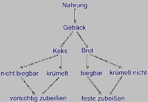
Ein Schema beschreibt, wie man mit einer Einheit (z.B. Brot) umzugehen hat.
7.4.3.4 Adaption
Adaption ist der Prozess der Anpassung. Das Individuum (z.B. das Kind) versucht sich an die Umwelt anzupassen. Der konstruktivistische Ansatz zwischen zwei Arten der Anpassung: der Assimilation und der Akkomodation.
Assimilation bedeutet Eingliederung neuer Erfahrungen in ein bereits bestehendes Schema, Akkommodation bedeutet dagegen die Erweiterung bzw. Anpassung eines Schemas (also der kognitiven Strukturen) an eine wahrgenommene Situation, die mit den vorhandenen Schemata nicht bewältigt werden kann.
7.4.3.4.1 Assimilation
Assimilation (Schwächungsprozesse, durch die neue Erfahrungen in ein existierendes Schema eingeordnet werden).
Beispiel Assimilation:
Ein Kind hat bereits gelernt, dass
ein Apfel zum Mund geführt werden muss,
der Mund geöffnet werden muss und
ein Stück herausgebissen werden muss.
Trifft dieses Kind nun auf eine Birne, assimiliert das Kind [Apfel und Birne sehen schließlich auch ähnlich aus] und geht mit der Birne genau wie mit einem Apfel um.
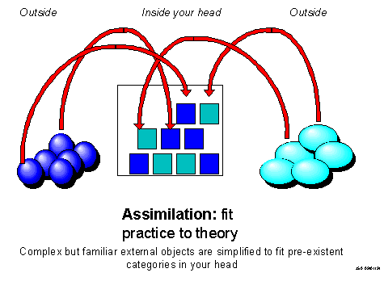
7.4.3.4.2 Akkomodation
Akkomodation (Verstärkungsprozesse, die ein wahrgenommenes Problem bei der Verwendung eines Objekts zu umgehen versuchen, indem das existierende Schema erweitert wird.)
Beispiel Akkommodation:
Der Versuch eines Kindes an einem Bauklotz zu saugen, wird durch die Assimilation gestützt, wenn der Bauklotz einem essbaren Gegenstand ähnlich erscheint. Da der Bauklotz jedoch keine Nahrung beinhaltet, genügt die Assimilation nicht zur Bewältigung dieser Situation. Das Kind muss akkommodieren: Das Schema wird erweitert.
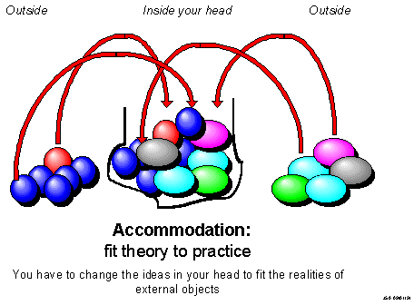
“Kann eine Situation nicht durch bestehende Schemata erfolgreich bewältigt werden Assimilation, so muss das entsprechende Schema um die neuen Erkenntnisse erweitert werden [Akkommodation].”
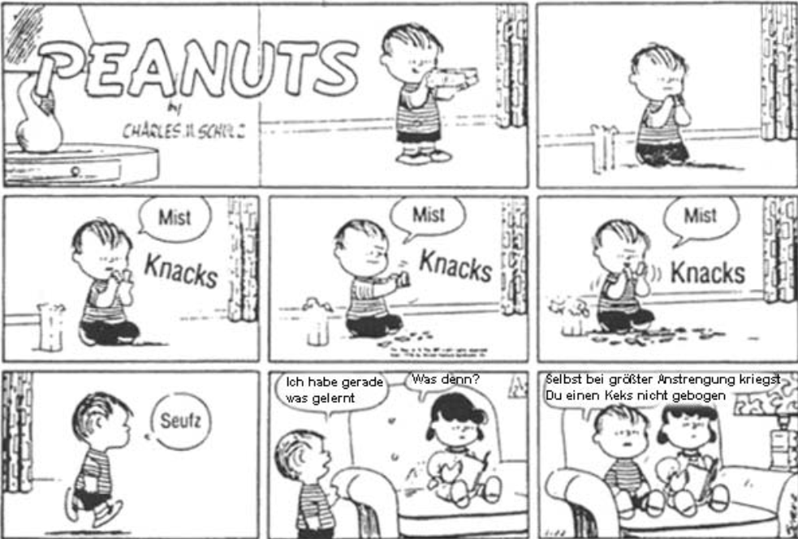
“In diesem Beispiel versucht Linus zunächst zu assimilieren: Er versucht mit dem Keks so umzugehen, wie er es mit Brot gewöhnt ist: Eine Scheibe Brot kann man biegen. Nach einigen fehlgeschlagenen Versuchen akkommodiert er: Ein Keks kann nicht mit Brot gleichgestellt werden. Es handelt sich zwar bei beiden um etwas Essbares und um eine Backware, dennoch gibt es Unterschiede. Ein Keks ist etwas anderes, als eine Scheibe Brot - das vorhandene Schema muss erweitert werden (Akkommodation), da es nicht ausreicht.” http://www.lern-psychologie.de/kognitiv/Piaget1.pdf
7.4.3.5 Funktional gesteuerter Spracherwerb
Die kognitivistisch-konstruktivistische Konzeption der Sprachentwicklung des Kindes ist demnach grundsätzlich als in die Entwicklung der Intelligenz des Kindes, seiner Neugier und seiner sozialen Interaktionsfä- higkeit eingebettet zu sehen. Zwar hat im Werk von Piaget die Beobachtung des Sprachverhaltens des Kindes am Anfang gestanden (vgl. Piaget 1923); sie war aber ebenso wie bei Preyer und den Sterns mehr eine Methode, die Entwicklung der kindlichen Psyche, genauer die Genese des Denkens beim Kind zu untersuchen. Diese weist nach Piaget vier sukzessive Hauptstufen auf:
die sensomotorische Stufe,
die Stufe des anschaulichen Denkens,
die Stufe des konkret-operativen Denkens
und – beim Erwachsenen schließlich – die Stufe des formal-operativen Denkens.
Welche Beobachtungen würden diese Konzeption stützen? Man würde z. B. erwarten, dass der Verwendung von Sprache in der Interaktion ihre Verwendung in Vorgängen lauten Denkens in der Entwicklung vorangeht und dass diese Funktion des Sprechens auch prinzipiell erhalten bleibt. Man würde weiter erwarten, dass eine sprachliche Ausdruckseinheit erst dann aus dem Input aufgenommen wird, wenn ihr ein Konzept entspricht. Das muss natürlich nicht die Bedeutung in der Erwachsenensprache sein, aber jedenfalls eine Vorstellungseinheit im Wissen des Kindes. Und so müsste es für alle Bestandteile des Sprachsystems sein, die phonologischen, morphologischen und syntaktischen Mittel; kurz gesagt, die kognitivistische Konzeption lässt einen sog. funktional gesteuerten Spracherwerb erwarten.
7.4.3.6 Lautes Denken
Die erstgenannte Erwartung sah Piaget in dem Phänomen des sog. Monologisierens des vier- bis siebenjährigen Kindes bestä- tigt. Die beim selbstorganisierten Spielen beobachteten Kinder einer Kindertagesstätte redeten vor sich hin, ihre Aktivitäten offenbar eher sprachlich begleitend als mitteilend, obwohl sich die Äußerungen nach Form und situativen Gegebenheiten nicht von kommunikativer Interaktion unterschieden (vgl. Piaget 1973).
7.4.3.7 Objektpermanenz
Für die Erwartung eines konzeptgesteuerten Erwerbs sprachlicher Mittel sprechen Beobachtungen zur zeitlichen Reihenfolge von begrifflicher und sprachlicher Entwicklung. Von Geburt an bis etwa zum Ende des ersten Lebensjahres ist dem kindlichen Denken ein Objekt nur so lange präsent, wie es wahrgenommen wird. Erst zwischen 0;10 und 1;0 entwickelt sich die kognitive Fähigkeit, eine geistige Vorstellung eines Objekts zu bewahren, die sog. Objektpermanenz. Zeitlich mit ihr einher, genauer gesagt geringfügig nachzeitig, geht der Erwerb des ersten bedeutungshaltigen Wortes vonstatten. Sprachliche Mittel für WarumFragen sind zeitlich an die begriffliche Erkenntnis des Kausalzusammenhangs gekoppelt und zahlreiche Beobachtungen in Folgeuntersuchungen im Rahmen des kognitivistischen Paradigmas haben weitere Zusammenhänge zugunsten des funktionalistischen Modells erbracht.
7.4.3.8 Nicht bestätigte Annahmen
Allerdings haben nicht alle Ergebnisse späterer Untersuchungen die ursprünglichen Annahmen bestätigt. Den generellen Zusammenhang zwischen kognitivem Niveau und sprachlicher Entwicklung haben SchanerWolles/Haider (1987) überprüft. Von rund 60 Kindern zwischen 5 und 9 Jahren wurde mit einer standardisierten Testbatterie die Entwicklung ihres operativen Denkens ermittelt. Parallel dazu wurde mit einer Satz-BildMatching-Aufgabe ihr Verstehen von Sätzen mit unterschiedlich komplexen anaphorischen Relationen gemessen. Die Ergebnisse zeigten einen signifikanten Zusammenhang zwischen dem Alter und der kognitiven Entwicklung, aber keinen durchgängigen Zusammenhang zwischen kognitiver und sprachlicher Entwicklung. Damit bestätigen sich Befunde frü- herer Experimente, besonders von Sinclair-de Zwart (1971).
7.4.3.9 Bestätigte Annahmen
Deutlicher positiv ist die Evidenz über den Zusammenhang zwischen der Struktur der Entwicklung der sensomotorischen Intelligenz und dem Erwerb semantischer Sprachmittel. So stehen nach Bloom (1973) und Szagun (2013) Stufen des Syntaxerwerbs mit Stufen der sensomotorischen Entwicklung in den ersten zwei Lebensjahren insofern in Analogie, als der syntaktischen Entwicklung die Entwicklung semantischer Konzepte, nämlich der Kasusrollen im Sinne von Fillmore (1968) zu Grunde liegen, welche ihrerseits analog zu den Stufen der Sensomotorikentwicklung abläuft.
7.4.3.10 Operationsprinzipien
Die Frage, wie das Kind in der ja nicht vorsegmentierten Folge von Schall die formalen Einheiten erkennt, denen sensomotorischen Bedeutungen zuzuordnen sind, eine Frage übrigens, die aus der Sicht jeder Theorie beantwortet werden muss, hat durch die sprachvergleichenden Erwerbsuntersuchungen von Slobin (1973) eine kognitivistisch basierte Antwort gefunden. Die vergleichende Analyse von Erwerbsdaten aus vierzig Sprachen sowie die darauf bezogene Kategorisierung der Inputeigenschaften führte zur Annahme kognitiver Prinzipien, denen alle Kinder bei der Segmentierung, Klassifikation und beim Erkennen grammatischer Beziehungen wahrscheinlich gefolgt sind: sog. universale Operationsprinzipien.
7.4.3.10.1 Spracherwerbsdaten von ungarisch-serbokroatischen bilingualen Kindern (vgl. Slobin 1973)
Die Spracherwerbsdaten ungarisch-serbokroatisch bilingualer Kinder weisen auf, dass die Ausdrücke für die Bezeichnung von Ortsrelationen im Ungarischen früher gelernt werden als im Serbokroatischen. Zugleich ist aber klar, dass die Kinder die entsprechenden Konzepte schon haben müssen, auch wenn sie die sprachlichen Ausdrücke des Serbokroatischen nicht erworben haben. Sie kommunizieren sie auf anderen, lernersprachlichen Wegen, durch Wahl geeigneter Verben, durch Bezug auf kontextuelle Gegebenheiten o. A. Die Analyse der beteiligten Sprachen ergibt, dass die Ortsbeziehungen im Ungarischen einheitlich durch monomorphematische Postpositionen ausgedrückt werden, im Serbokroatischen durch Präpositionen, Nominalflexion oder beides in Kombination. Aus diesem und den Befunden aller anderen Daten ergibt sich eine universale Erwerbsbeobachtung: Postverbale und postnominale lokale Ausdrücke werden früher gelernt als präverbale und pränominale. (vgl. Slobin 1973, S. 187 ff.) leitet daraus die Existenz des Operationsprinzips ab: Richte deine Aufmerksamkeit auf das Ende des Wortes. Auf die gleiche Weise, abgeleitet aus universalen Erwerbsbeobachtungen, werden weitere Operationsprinzipien erschlossen (vgl. Slobin 1973, S. 205–206):
Vermeide Ausnahmen.
Der Gebrauch grammatischer Ausdrücke soll semantisch gerechtfertigt sein.
Die kognitivistische Spracherwerbsforschung weist eine große Zahl von Einzelergebnissen auf, die die semantische Basis des Formenerwerbs mehr oder weniger direkt belegen; Entwürfe eines kohärenten Modells des kindlichen Laut-, Wort- und Syntaxerwerbs wurden erst in jüngster Zeit durch Budwig (1995) vorgeschlagen. Als problemgeschichtliche Einführung in das Gebiet empfiehlt sich Weinert (2000)
---
7.4.4 Nativismus vs. Gebrauchstheorien
Zusammengestellt anhand von: - Stoll (2008)
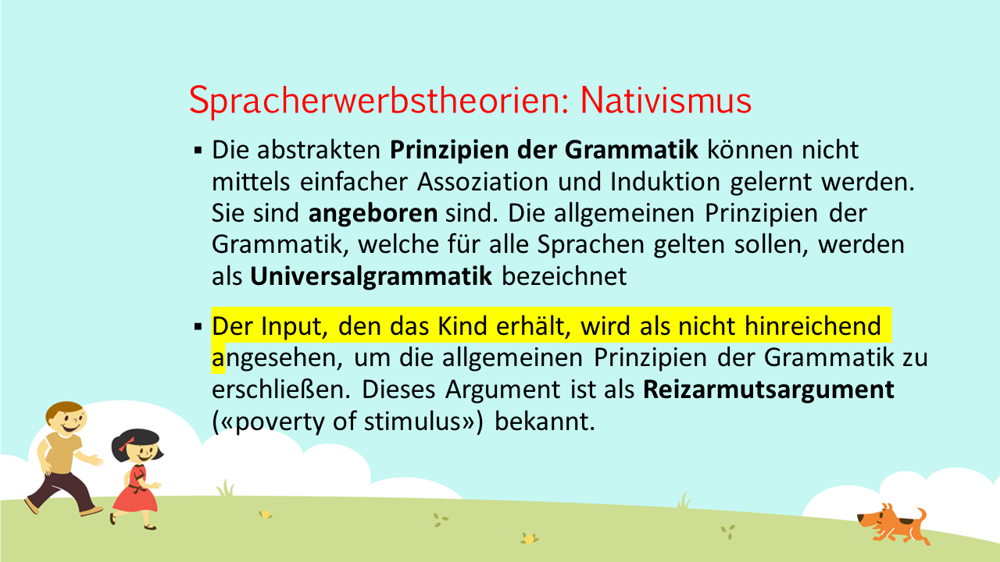
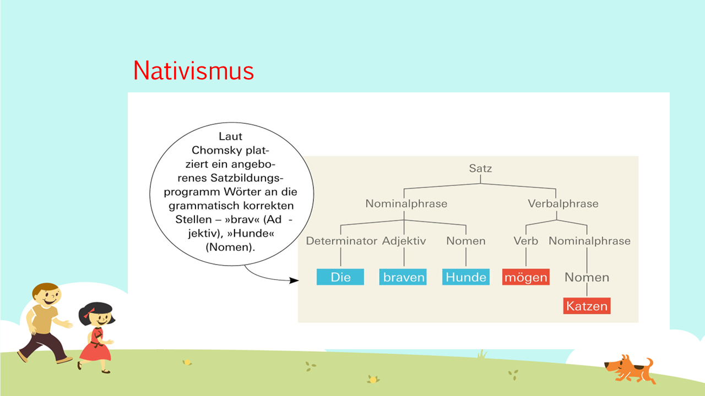
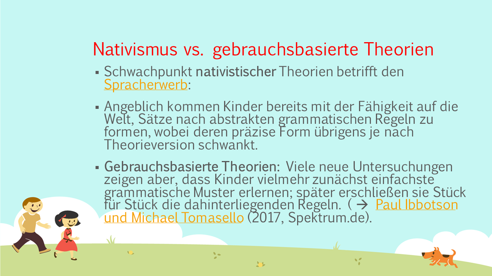
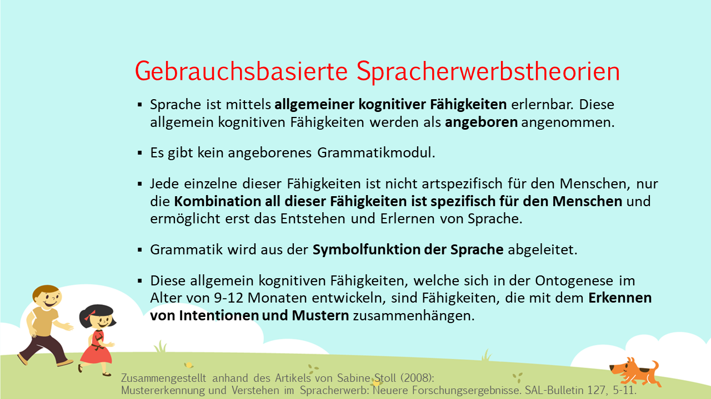
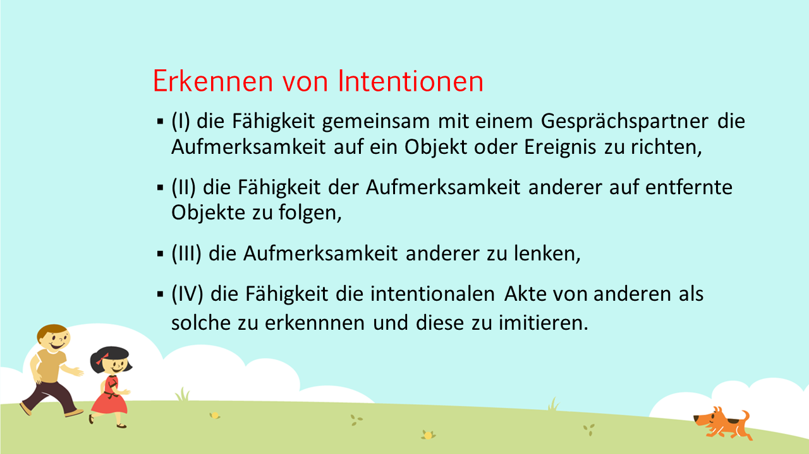
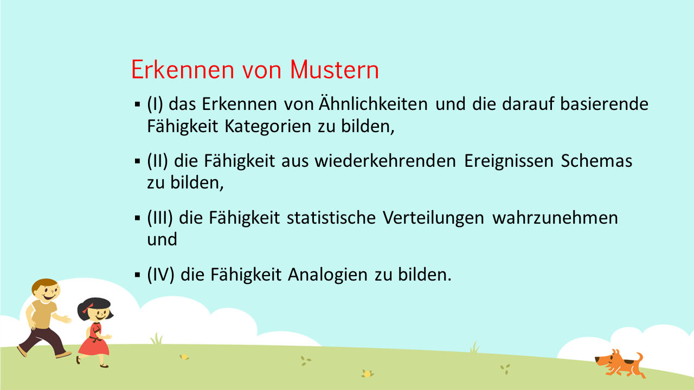
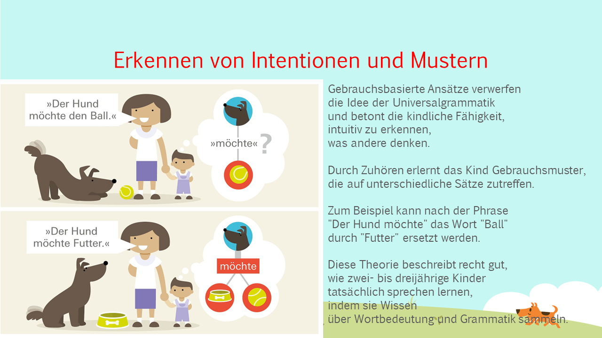
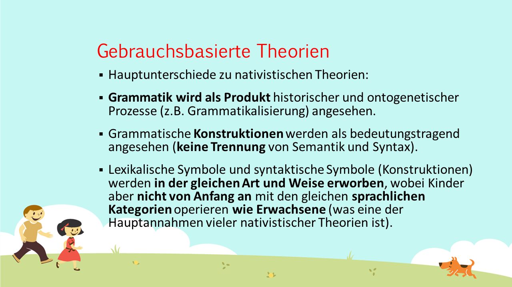
---
:::rmdrobot
In welcher Hinsicht unterscheidet sich Chomskys Nativismus von kognivistischen und konstruktivistischen Modellen (Piaget, Tomasello)?
Welche Rolle spielt soziale Interaktion im Spracherwerb?
Worin zeigt sich, dass Nachahmungsfähigkeiten zwar wichtig sind im Spracherwerb, aber zur Erklärung nicht ausreichen?
Erläutern Sie die menschlichen Fähigkeiten der Mustererkennung, des Perspektivenwechsels und der geteilten Aufmerksamkeit im Spracherwerb!
Welchen Vorteil hat die Einordnung von Erscheinungen in Kategorien? Was unterscheidet Basiskategorien (z.B. Hund ) von anderen Kategorien (z.B. Tier, Pudel), prototypische Kategorien (z.B. Spatz) von nicht-prototypischen (z.B. Strauß)?
(–> Kauschke, Teams, …)
:::
Serious Science (Dauer: 11:27 Minuten):
Language Acquisition in Children Ben Ambridge:
https://www.youtube.com/watch?v=I73Ou2wOyy4
Bilingual First Language Acquisition workshop at the University of York: Prof. Ben Ambridge:
https://www.youtube.com/watch?v=0rfU1wlRbwE